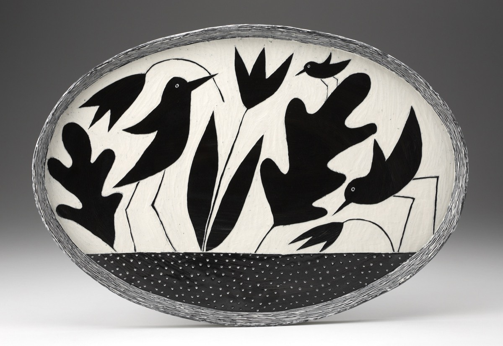

Ceramicist — sgraffito porcelain, birds, sky journal.

Working from a studio in Pelham, Massachusetts for more than four decades. Functional ceramics and sculptural birds, carved in sgraffito porcelain.